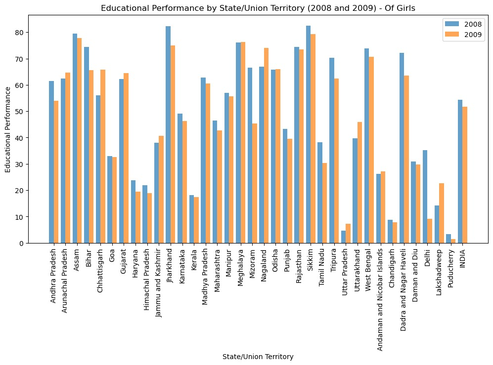
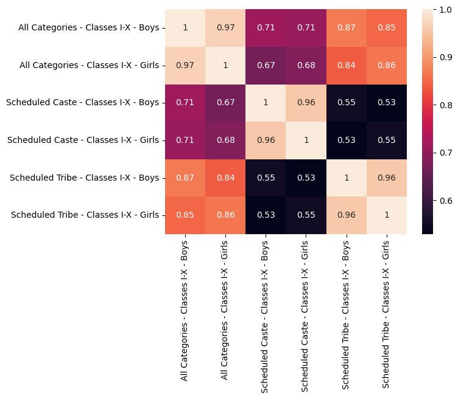
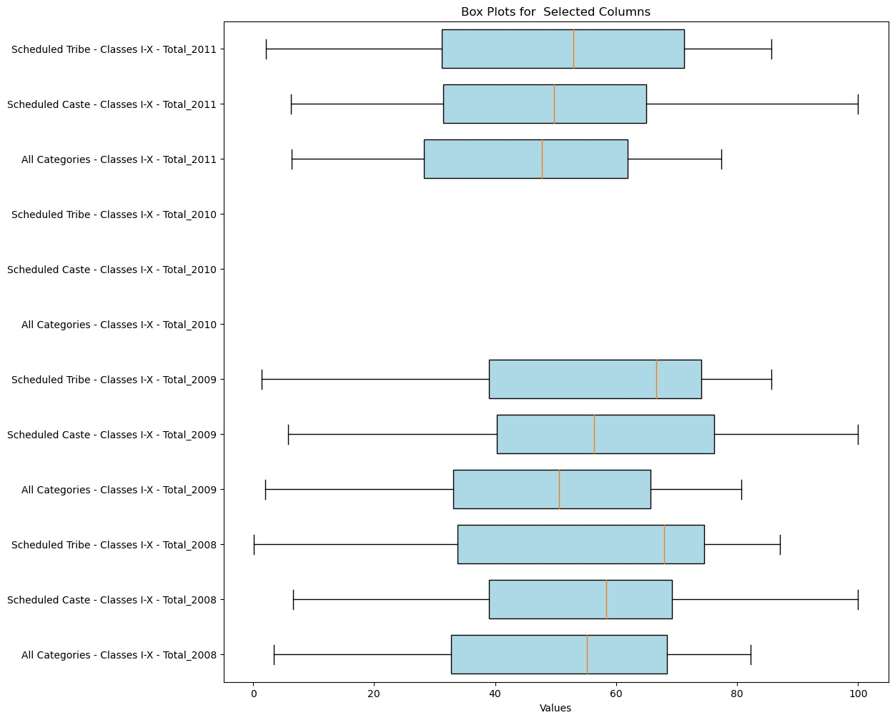
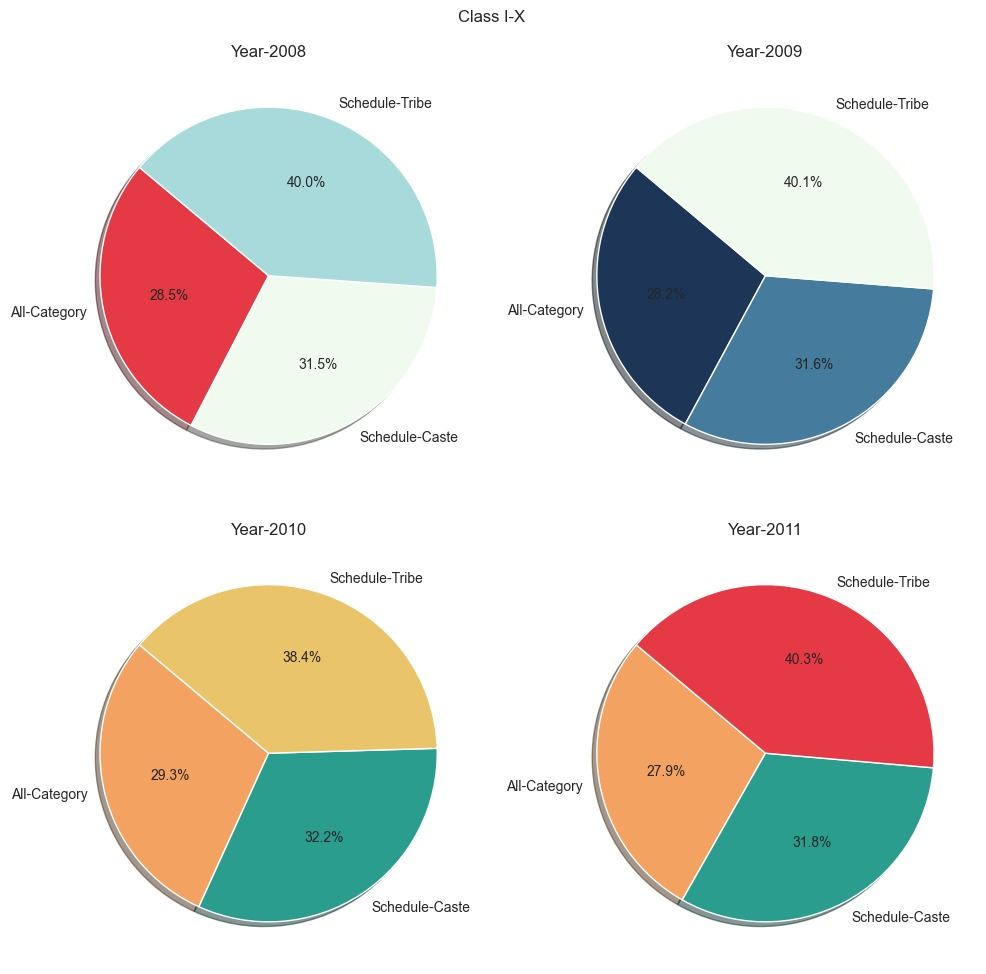

Description
The rising trend of student dropouts across a myriad of academic fields and domains is a significant concern in today's educational landscape. This is affecting our country's economy to a great extent, causing a decline in potential manpower for developmental works.
To tackle this issue effectively, we are leveraging diverse datasets and advanced analytics to gain insights into the underlying causes of student attrition. By analysing these datasets and presenting the findings through informative graphs, our project aims to provide actionable solutions to mitigate dropout rates.
Our intention is for our findings to inform policymakers and leaders, prompting them to implement the necessary political and social solutions required to address this issue.




The below graphs, which are generated, provide different visual representations of data pertaining to gender, classes, year wise, categories, and regions. These graphs serve the purpose of visualizing the dataset, making it easier to comprehend the underlying trends and patterns within the data. Through this visualization, one can analyse the data and derive meaningful insights to generate reports.
Back